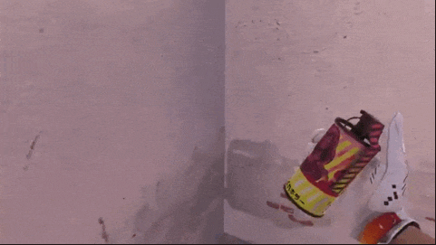
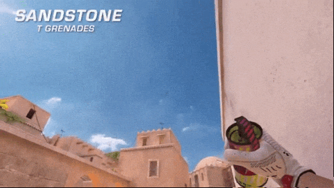
Dimov · variante 1
Dónde pararse y hacia dónde apuntar
- Posición
- La posición se muestra en la captura de pantalla de la fuente.
- Vista
- Mira el punto de mira en la captura de pantalla.
- Lanzar
- Ver cuadro
- Resultado
- —
STANDOFF 2 · GUÍA TÁCTICA
Guías breves con capturas de pantalla: dónde pararse, dónde apuntar y cómo lanzar una granada.
Elegir mapa ↘01 · SELECCIONAR MAPA
Las tarjetas conducen simplemente a guías de captura de pantalla del mapa deseado.
02 · TIPOS DE GRANADAS
Haz clic en el tipo de granada para expandir los scatters que se encuentran en los mapas. Las tarjetas tienen capturas de pantalla o una marca si la fuente no muestra el punto de entrega.
Todos los spreads de este tipo. Haga clic en el nombre para ir a las instrucciones en el mapa.
Todos los spreads de este tipo. Haga clic en el nombre para ir a las instrucciones en el mapa.
Todos los spreads de este tipo. Haga clic en el nombre para ir a las instrucciones en el mapa.
Todos los spreads de este tipo. Haga clic en el nombre para ir a las instrucciones en el mapa.
03 · LADO DEL EQUIPO
T - ataque, CT - defensa. Cada botón abre una lista de tarjetas; Los elementos no confirmados se enumeran por separado.
Tiradas de ataque agrupadas por mapa. Selecciona un título para ir a la guía de capturas de pantalla.
Tiradas defensivas agrupadas por mapa. Selecciona un título para ir a una guía de capturas de pantalla.
Estas fuentes no enumeran el lado del equipo, por lo que los lanzamientos no se atribuyen a T o CT.
04 · GUÍAS DE PANTALLA
Amplía las instrucciones debajo del marco: dice dónde pararte, dónde apuntar y cómo lanzar.
MAPA · STANDOFF 2


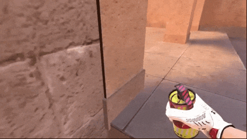
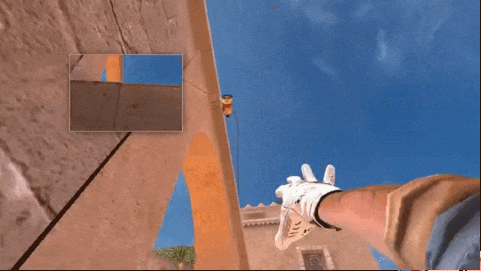
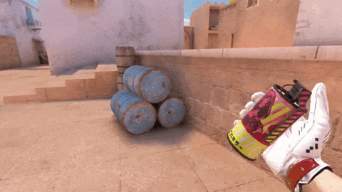
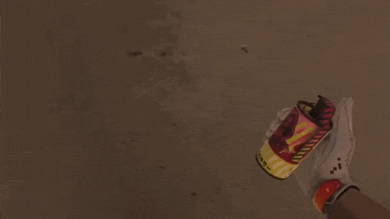
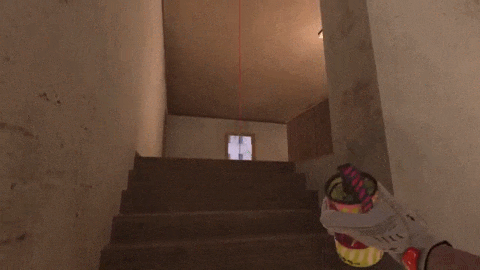
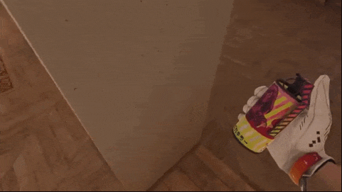
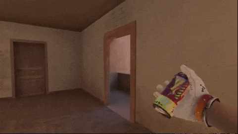
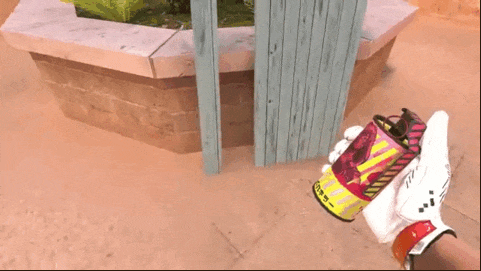
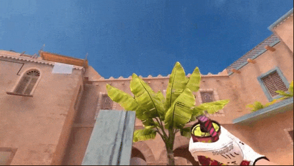
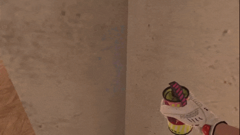
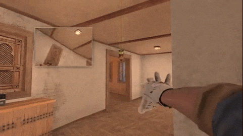
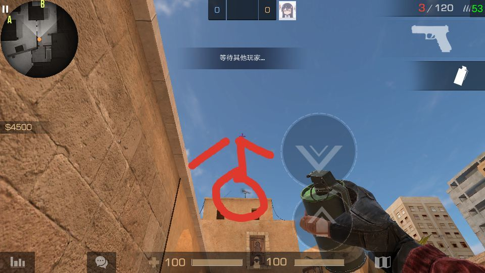
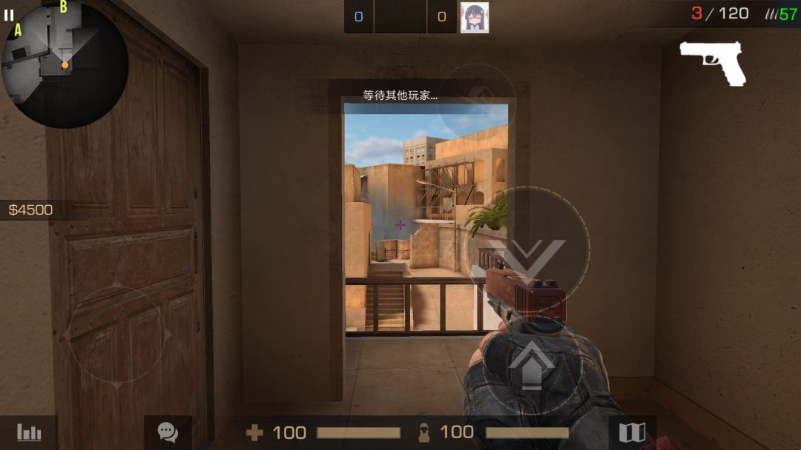
Capturas de pantalla de la guía de archivo de 2019. Después de actualizar Osiris, revisa el tiro en suspensión en el lobby de entrenamiento.
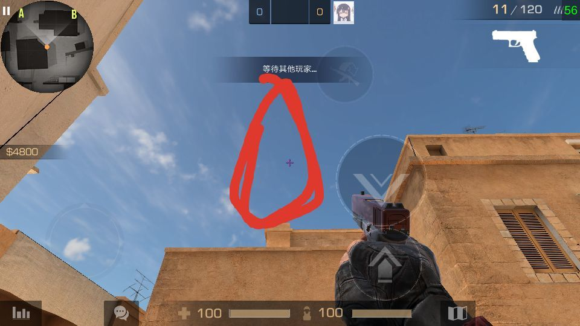
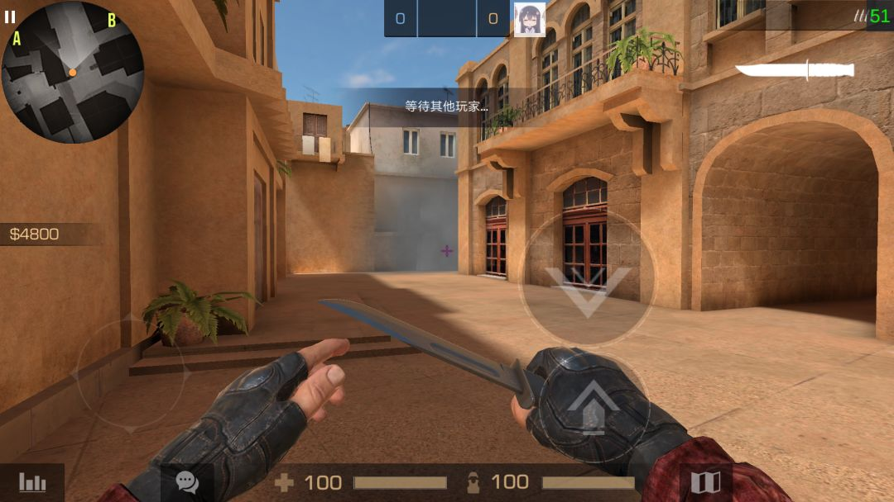
Capturas de pantalla de la guía de archivo de 2019. Después de actualizar Osiris, revisa el tiro en suspensión en el lobby de entrenamiento.
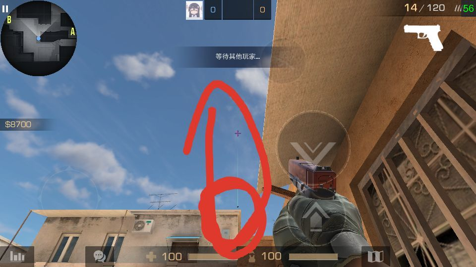
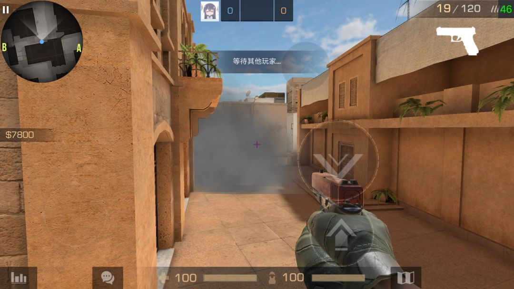
Capturas de pantalla de la guía de archivo de 2019. Después de actualizar Osiris, revisa el tiro en suspensión en el lobby de entrenamiento.
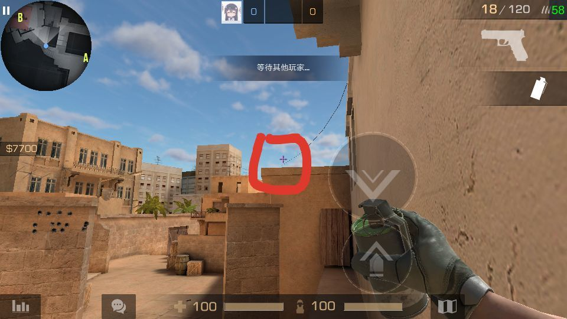
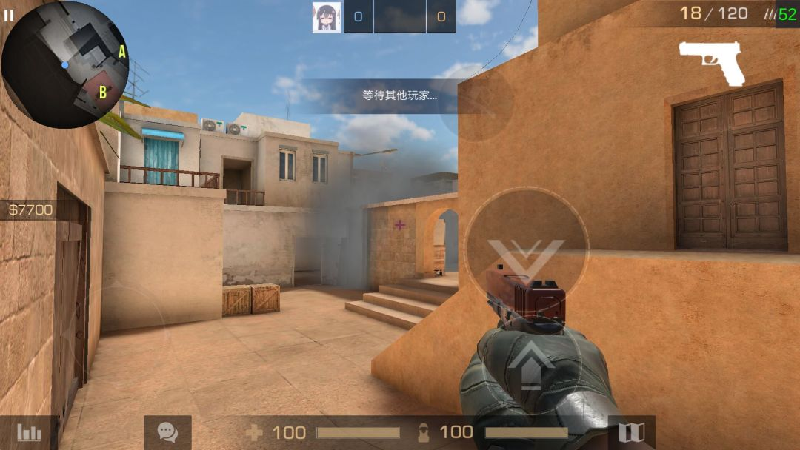
Capturas de pantalla de la guía de archivo de 2019. Después de actualizar Osiris, revisa el tiro en suspensión en el lobby de entrenamiento.
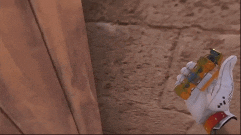
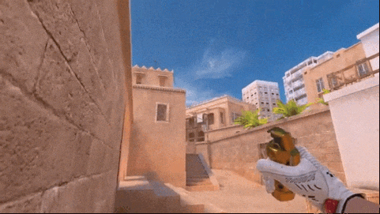
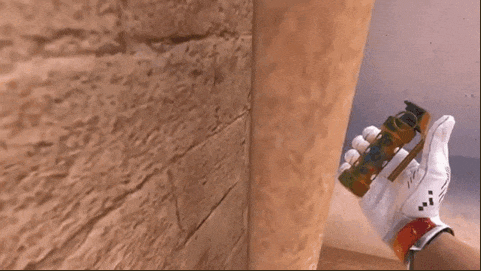
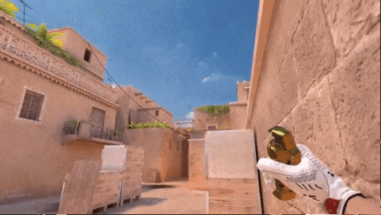
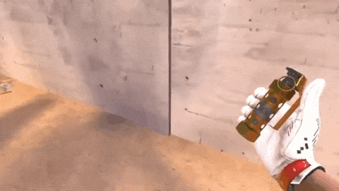
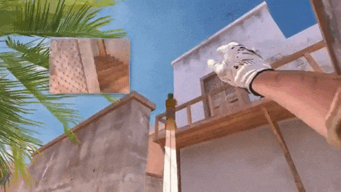
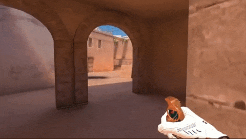
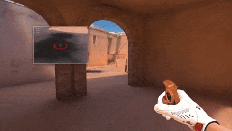
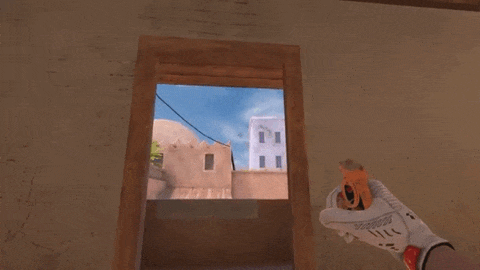
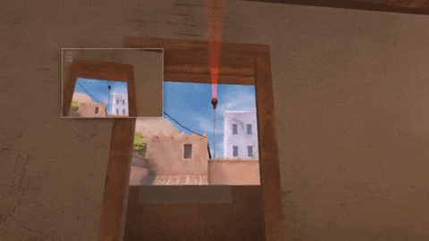
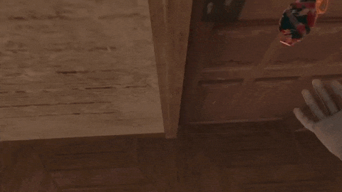
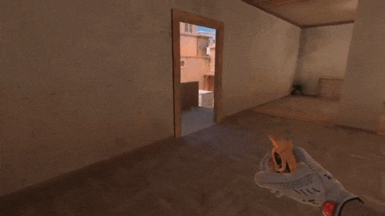
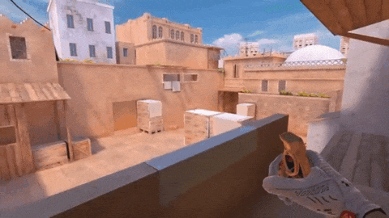
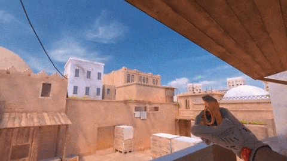
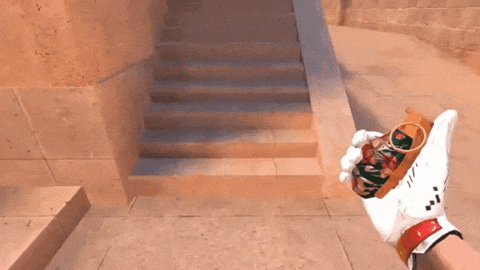
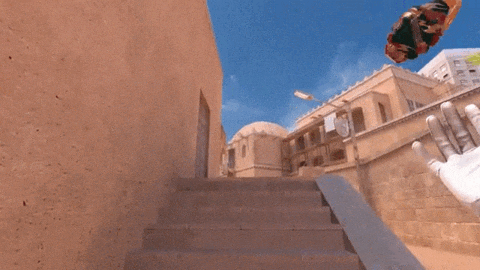
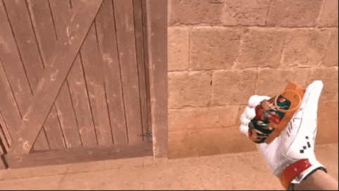
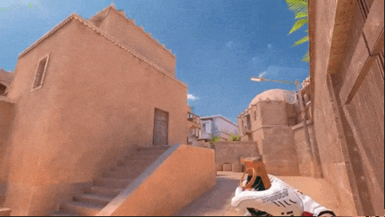
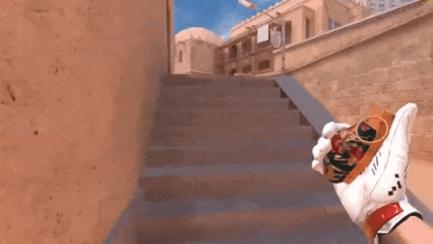
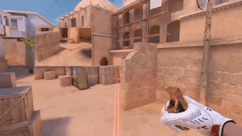
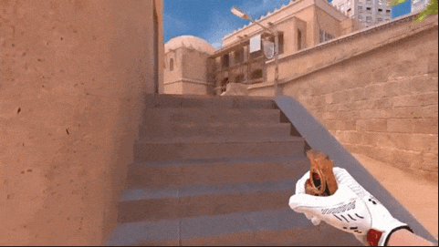
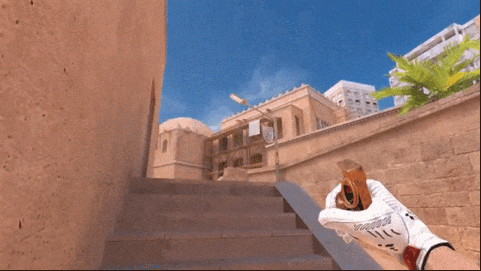
MAPA · STANDOFF 2
MAPA · STANDOFF 2

MAPA · STANDOFF 2
MAPA · STANDOFF 2
MAPA · STANDOFF 2
El metraje anterior era de la guía 2022, antes de que saliera Dune, y mostraba un mapa diferente. Los reemplacé con un marco del Dune real. Aún no he encontrado la posición exacta ni los cofres de visión para el dragón.
Fuente: descripción general del mapa Dune ↗MAPA · STANDOFF 2